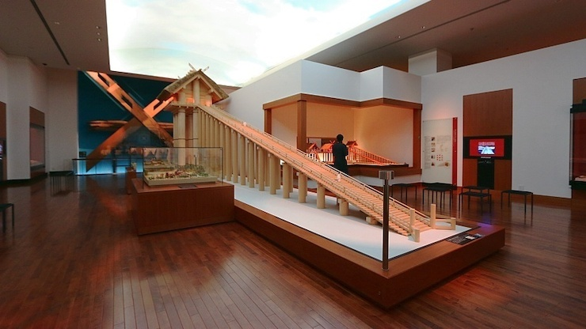

Shimane Prefecture is located in the northern region side of West Japan, facing the Sea of Japan.
The long and narrow land stretches from east to west, and the Oki Islands float to the north of its
peninsula. Surrounded by the Sea of Japan to the north, and the Chugoku mountain range to the south,
Shimane Prefecture is blessed with the fresh bounties of the sea and mountains.
With 3 airports, railroads, and buses, Shimane is connected with Tokyo and other locations in Japan.
In the recent years, Shimane’s athletes have been very active in national sports competitions for sports
such as hockey and athletics, and Shimane is equipped with facilities such as hockey stadiums, and
gymnasiums. With a professional basketball team and the pride of being the birth place of Kei Nishikori,
a world-class tennis player, Shimane is a place where sports thrives. Shimane had previously also
conducted pre-games training camps for the World Championships in Athletics held in Osaka, Beijing
Olympics, and the 2002 FIFA World Cup.
(Source: Shimane Official Website)
Prefecture Image
Izumo Taisha
Matsue
Shimane Museum of Ancient Izumo
